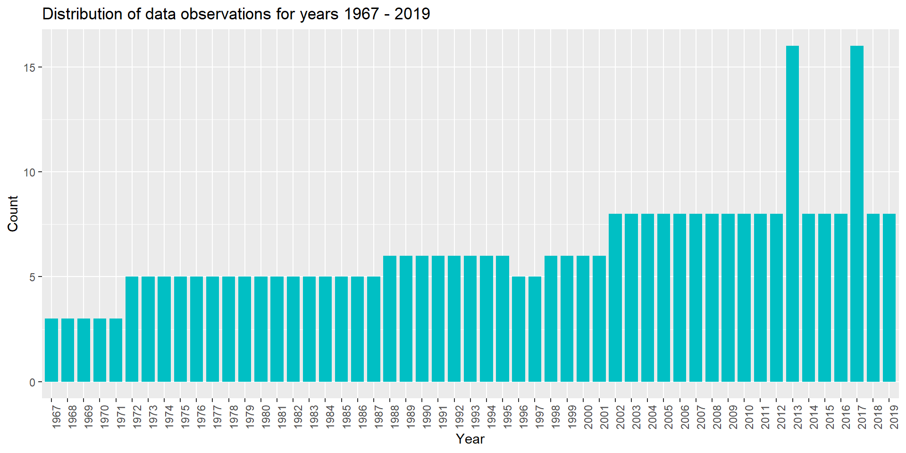
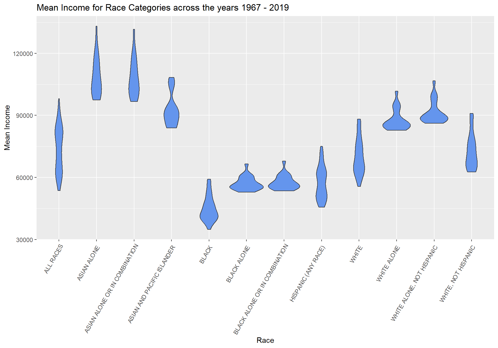

library(tidyverse)
library(ggplot2)
knitr::opts_chunk$set(echo = TRUE, warning=FALSE, message=FALSE)Challenge 5 Solutions
challenge_5
railroads
cereal
air_bnb
pathogen_cost
australian_marriage
public_schools
usa_households
Introduction to Visualization
Challenge Overview
Today’s challenge is to:
- read in a data set, and describe the data set using both words and any supporting information (e.g., tables, etc)
- tidy data (as needed, including sanity checks)
- mutate variables as needed (including sanity checks)
- create at least two univariate visualizations
- try to make them “publication” ready
- Explain why you choose the specific graph type
- Create at least one bivariate visualization
- try to make them “publication” ready
- Explain why you choose the specific graph type
R Graph Gallery is a good starting point for thinking about what information is conveyed in standard graph types, and includes example R code.
(be sure to only include the category tags for the data you use!)
Read in data
Read in one (or more) of the following datasets, using the correct R package and command.
- cereal.csv ⭐
- Total_cost_for_top_15_pathogens_2018.xlsx ⭐
- Australian Marriage ⭐⭐
- AB_NYC_2019.csv ⭐⭐⭐
- StateCounty2012.xls ⭐⭐⭐
- Public School Characteristics ⭐⭐⭐⭐
- USA Households ⭐⭐⭐⭐⭐
For this challenge I will be working with the “USA Households*.xlsx” data set.
library(readxl)
# Reading the USA Households\*.xlsx data set and storing in a data frame
column_names = c("Year", "Household_Number_Thousands", "Total_Percent_Distribution", "Under $15,000", "$15,000 to $24,999", "$25,000 to $34,999", "35,000 to $49,999", "$50,000 to $74,999", "$75,000 to $99,999", "$100,000 to $149,999", "$150,000 to $199,999", "$200,000 and over", "Median_Income_Estimate", "Median_Income_MOE", "Mean_Income_Estimate", "Mean_Income_MOE")
usa_data <- read_excel("_data/USA Households by Total Money Income, Race, and Hispanic Origin of Householder 1967 to 2019.xlsx", col_names = column_names, skip = 5)
print(usa_data)# A tibble: 383 × 16
Year House…¹ Total…² Under…³ $15,0…⁴ $25,0…⁵ 35,00…⁶ $50,0…⁷ $75,0…⁸ $100,…⁹
<chr> <chr> <dbl> <dbl> <dbl> <dbl> <dbl> <dbl> <dbl> <dbl>
1 ALL … <NA> NA NA NA NA NA NA NA NA
2 2019 128451 100 9.1 8 8.3 11.7 16.5 12.3 15.5
3 2018 128579 100 10.1 8.8 8.7 12 17 12.5 15
4 2017… 127669 100 10 9.1 9.2 12 16.4 12.4 14.7
5 2017 127586 100 10.1 9.1 9.2 11.9 16.3 12.6 14.8
6 2016 126224 100 10.4 9 9.2 12.3 16.7 12.2 15
7 2015 125819 100 10.6 10 9.6 12.1 16.1 12.4 14.9
8 2014 124587 100 11.4 10.5 9.6 12.6 16.4 12.1 14
9 2013… 123931 100 11.4 10.3 9.5 12.5 16.8 12 13.9
10 2013… 122952 100 11.3 10.4 9.7 13.1 17 12.5 13.6
# … with 373 more rows, 6 more variables: `$150,000 to $199,999` <dbl>,
# `$200,000 and over` <dbl>, Median_Income_Estimate <dbl>,
# Median_Income_MOE <dbl>, Mean_Income_Estimate <chr>, Mean_Income_MOE <chr>,
# and abbreviated variable names ¹Household_Number_Thousands,
# ²Total_Percent_Distribution, ³`Under $15,000`, ⁴`$15,000 to $24,999`,
# ⁵`$25,000 to $34,999`, ⁶`35,000 to $49,999`, ⁷`$50,000 to $74,999`,
# ⁸`$75,000 to $99,999`, ⁹`$100,000 to $149,999`Since the “USA Households*.xlsx” data set is in Excel format, I am using the ‘readxl’ package for reading the data. After reading, the data is stored in a dataframe “usa_data”. The first three rows in the dataframe contains description about the data and the 4th and 5th row contains the column headings. I resolve this issue by skipping the first 5 rows while reading the data set and storing in a dataframe “usa_data” with the renamed column names.
Briefly describe the data
The USA household data contains information on the mean and median income grouped by Race and Hispanic Origin of householder for the period 1967 - 2019. The data is split into 12 different categories based on Races and we have the total number of households surveyed in a given year along with the total percentage distribution (100 for all observations), percentage distribution for various income levels, and the mean and median (estimated and margin of error) income. For some races, data is not available for all the years in the period 1967 - 2019.
Tidy Data and Mutate Variables (as needed)
Is your data already tidy, or is there work to be done? Be sure to anticipate your end result to provide a sanity check, and document your work here. Are there any variables that require mutation to be usable in your analysis stream? For example, do you need to calculate new values in order to graph them? Can string values be represented numerically? Do you need to turn any variables into factors and reorder for ease of graphics and visualization?
Document your work here.
The data is not tidy and requires data cleaning. (Note: I renamed the column names while reading the data.) First, I removed the last 31 rows from the dataframe “usa_data” as they are just footnotes and not observations.
# Removing the last 31 rows as they are just footnotes and not observations
usa_data <- head(usa_data,-31)
print(usa_data)# A tibble: 352 × 16
Year House…¹ Total…² Under…³ $15,0…⁴ $25,0…⁵ 35,00…⁶ $50,0…⁷ $75,0…⁸ $100,…⁹
<chr> <chr> <dbl> <dbl> <dbl> <dbl> <dbl> <dbl> <dbl> <dbl>
1 ALL … <NA> NA NA NA NA NA NA NA NA
2 2019 128451 100 9.1 8 8.3 11.7 16.5 12.3 15.5
3 2018 128579 100 10.1 8.8 8.7 12 17 12.5 15
4 2017… 127669 100 10 9.1 9.2 12 16.4 12.4 14.7
5 2017 127586 100 10.1 9.1 9.2 11.9 16.3 12.6 14.8
6 2016 126224 100 10.4 9 9.2 12.3 16.7 12.2 15
7 2015 125819 100 10.6 10 9.6 12.1 16.1 12.4 14.9
8 2014 124587 100 11.4 10.5 9.6 12.6 16.4 12.1 14
9 2013… 123931 100 11.4 10.3 9.5 12.5 16.8 12 13.9
10 2013… 122952 100 11.3 10.4 9.7 13.1 17 12.5 13.6
# … with 342 more rows, 6 more variables: `$150,000 to $199,999` <dbl>,
# `$200,000 and over` <dbl>, Median_Income_Estimate <dbl>,
# Median_Income_MOE <dbl>, Mean_Income_Estimate <chr>, Mean_Income_MOE <chr>,
# and abbreviated variable names ¹Household_Number_Thousands,
# ²Total_Percent_Distribution, ³`Under $15,000`, ⁴`$15,000 to $24,999`,
# ⁵`$25,000 to $34,999`, ⁶`35,000 to $49,999`, ⁷`$50,000 to $74,999`,
# ⁸`$75,000 to $99,999`, ⁹`$100,000 to $149,999`Currently, the dataset does not have a separate column for “Race”. The “Race” was mentioned in the “Year” column (the remaining columns were empty for such observations) and were inserted as separators for different race groups in the data. So, I created a new column for “Race” (muatated variable) and filled it with non-numerical values from “Year” column. I also filled the empty values in “Race” with the previous value in that column. Then, I removed the rows from the dataset which had Race value in the “Year” column.
# Creating new column for Race and filling the empty values for Race with the previous value in that column
usa_data <- usa_data%>%
mutate(Race = case_when(str_detect(Year,("([A-Z])")) ~ Year))%>%
fill(Race, .direction = "down")
# Removing the rows from usa_data which has non-numerical values in Year column (these rows have Race value in the Year column and were inserted as separators for different Race groups)
usa_data <- usa_data%>%
filter(!str_detect(Year,("([A-Z])")))
usa_data# A tibble: 340 × 17
Year House…¹ Total…² Under…³ $15,0…⁴ $25,0…⁵ 35,00…⁶ $50,0…⁷ $75,0…⁸ $100,…⁹
<chr> <chr> <dbl> <dbl> <dbl> <dbl> <dbl> <dbl> <dbl> <dbl>
1 2019 128451 100 9.1 8 8.3 11.7 16.5 12.3 15.5
2 2018 128579 100 10.1 8.8 8.7 12 17 12.5 15
3 2017… 127669 100 10 9.1 9.2 12 16.4 12.4 14.7
4 2017 127586 100 10.1 9.1 9.2 11.9 16.3 12.6 14.8
5 2016 126224 100 10.4 9 9.2 12.3 16.7 12.2 15
6 2015 125819 100 10.6 10 9.6 12.1 16.1 12.4 14.9
7 2014 124587 100 11.4 10.5 9.6 12.6 16.4 12.1 14
8 2013… 123931 100 11.4 10.3 9.5 12.5 16.8 12 13.9
9 2013… 122952 100 11.3 10.4 9.7 13.1 17 12.5 13.6
10 2012 122459 100 11.4 10.6 10.1 12.5 17.4 12 13.9
# … with 330 more rows, 7 more variables: `$150,000 to $199,999` <dbl>,
# `$200,000 and over` <dbl>, Median_Income_Estimate <dbl>,
# Median_Income_MOE <dbl>, Mean_Income_Estimate <chr>, Mean_Income_MOE <chr>,
# Race <chr>, and abbreviated variable names ¹Household_Number_Thousands,
# ²Total_Percent_Distribution, ³`Under $15,000`, ⁴`$15,000 to $24,999`,
# ⁵`$25,000 to $34,999`, ⁶`35,000 to $49,999`, ⁷`$50,000 to $74,999`,
# ⁸`$75,000 to $99,999`, ⁹`$100,000 to $149,999`Next, I removed the footnote number next to the year value and race value from the columns “Year” and “Race” respectively as they had no purpose in visualization.
# Removing the footnote number next to the year value in the "Year" column
usa_data <- usa_data%>%
mutate(Year = str_remove(Year, " .*"))
# Removing the footnote number next to the race value in the "Race" column
usa_data <- usa_data%>%
mutate(Race = str_remove(Race, "[0-9]+"))
usa_data# A tibble: 340 × 17
Year House…¹ Total…² Under…³ $15,0…⁴ $25,0…⁵ 35,00…⁶ $50,0…⁷ $75,0…⁸ $100,…⁹
<chr> <chr> <dbl> <dbl> <dbl> <dbl> <dbl> <dbl> <dbl> <dbl>
1 2019 128451 100 9.1 8 8.3 11.7 16.5 12.3 15.5
2 2018 128579 100 10.1 8.8 8.7 12 17 12.5 15
3 2017 127669 100 10 9.1 9.2 12 16.4 12.4 14.7
4 2017 127586 100 10.1 9.1 9.2 11.9 16.3 12.6 14.8
5 2016 126224 100 10.4 9 9.2 12.3 16.7 12.2 15
6 2015 125819 100 10.6 10 9.6 12.1 16.1 12.4 14.9
7 2014 124587 100 11.4 10.5 9.6 12.6 16.4 12.1 14
8 2013 123931 100 11.4 10.3 9.5 12.5 16.8 12 13.9
9 2013 122952 100 11.3 10.4 9.7 13.1 17 12.5 13.6
10 2012 122459 100 11.4 10.6 10.1 12.5 17.4 12 13.9
# … with 330 more rows, 7 more variables: `$150,000 to $199,999` <dbl>,
# `$200,000 and over` <dbl>, Median_Income_Estimate <dbl>,
# Median_Income_MOE <dbl>, Mean_Income_Estimate <chr>, Mean_Income_MOE <chr>,
# Race <chr>, and abbreviated variable names ¹Household_Number_Thousands,
# ²Total_Percent_Distribution, ³`Under $15,000`, ⁴`$15,000 to $24,999`,
# ⁵`$25,000 to $34,999`, ⁶`35,000 to $49,999`, ⁷`$50,000 to $74,999`,
# ⁸`$75,000 to $99,999`, ⁹`$100,000 to $149,999`Following that, I removed the “Total_Percent_Distribution” column form the dataset as the value was same (100) for all the observations and had no purpose in visualization.
# Remove the "Total_Percent_Distribution" column as that value is 100 for all observations
usa_data <- usa_data%>%
subset(select = -c(3))
usa_data# A tibble: 340 × 16
Year House…¹ Under…² $15,0…³ $25,0…⁴ 35,00…⁵ $50,0…⁶ $75,0…⁷ $100,…⁸ $150,…⁹
<chr> <chr> <dbl> <dbl> <dbl> <dbl> <dbl> <dbl> <dbl> <dbl>
1 2019 128451 9.1 8 8.3 11.7 16.5 12.3 15.5 8.3
2 2018 128579 10.1 8.8 8.7 12 17 12.5 15 7.2
3 2017 127669 10 9.1 9.2 12 16.4 12.4 14.7 7.3
4 2017 127586 10.1 9.1 9.2 11.9 16.3 12.6 14.8 7.5
5 2016 126224 10.4 9 9.2 12.3 16.7 12.2 15 7.2
6 2015 125819 10.6 10 9.6 12.1 16.1 12.4 14.9 7.1
7 2014 124587 11.4 10.5 9.6 12.6 16.4 12.1 14 6.6
8 2013 123931 11.4 10.3 9.5 12.5 16.8 12 13.9 6.7
9 2013 122952 11.3 10.4 9.7 13.1 17 12.5 13.6 6.3
10 2012 122459 11.4 10.6 10.1 12.5 17.4 12 13.9 6.3
# … with 330 more rows, 6 more variables: `$200,000 and over` <dbl>,
# Median_Income_Estimate <dbl>, Median_Income_MOE <dbl>,
# Mean_Income_Estimate <chr>, Mean_Income_MOE <chr>, Race <chr>, and
# abbreviated variable names ¹Household_Number_Thousands, ²`Under $15,000`,
# ³`$15,000 to $24,999`, ⁴`$25,000 to $34,999`, ⁵`35,000 to $49,999`,
# ⁶`$50,000 to $74,999`, ⁷`$75,000 to $99,999`, ⁸`$100,000 to $149,999`,
# ⁹`$150,000 to $199,999`Finally, I reordered the columns in the dataframe in order to have “Race” as the first column followed by “Year” and the remaining columns.
# Reorder the columns in the usa_data dataframe so that "Race" is the first column followed by "Year"
usa_data <- usa_data%>%
subset(select=c(16, 1, 2, 3, 4, 5, 6, 7, 8, 9, 10, 11, 12, 13, 14, 15))
usa_data# A tibble: 340 × 16
Race Year House…¹ Under…² $15,0…³ $25,0…⁴ 35,00…⁵ $50,0…⁶ $75,0…⁷ $100,…⁸
<chr> <chr> <chr> <dbl> <dbl> <dbl> <dbl> <dbl> <dbl> <dbl>
1 ALL RA… 2019 128451 9.1 8 8.3 11.7 16.5 12.3 15.5
2 ALL RA… 2018 128579 10.1 8.8 8.7 12 17 12.5 15
3 ALL RA… 2017 127669 10 9.1 9.2 12 16.4 12.4 14.7
4 ALL RA… 2017 127586 10.1 9.1 9.2 11.9 16.3 12.6 14.8
5 ALL RA… 2016 126224 10.4 9 9.2 12.3 16.7 12.2 15
6 ALL RA… 2015 125819 10.6 10 9.6 12.1 16.1 12.4 14.9
7 ALL RA… 2014 124587 11.4 10.5 9.6 12.6 16.4 12.1 14
8 ALL RA… 2013 123931 11.4 10.3 9.5 12.5 16.8 12 13.9
9 ALL RA… 2013 122952 11.3 10.4 9.7 13.1 17 12.5 13.6
10 ALL RA… 2012 122459 11.4 10.6 10.1 12.5 17.4 12 13.9
# … with 330 more rows, 6 more variables: `$150,000 to $199,999` <dbl>,
# `$200,000 and over` <dbl>, Median_Income_Estimate <dbl>,
# Median_Income_MOE <dbl>, Mean_Income_Estimate <chr>, Mean_Income_MOE <chr>,
# and abbreviated variable names ¹Household_Number_Thousands,
# ²`Under $15,000`, ³`$15,000 to $24,999`, ⁴`$25,000 to $34,999`,
# ⁵`35,000 to $49,999`, ⁶`$50,000 to $74,999`, ⁷`$75,000 to $99,999`,
# ⁸`$100,000 to $149,999`I checked for missing/null data in the “usa_data” dataframe and found that there are no NA or NULL values.
#Check for missing/null data in the hotel_data
sum(is.na(usa_data))[1] 0sum(is.null(usa_data))[1] 0I found that there are few columns which have numerical values but datatype assigned as “character” Hence, I looked further into those columns.
str(usa_data)tibble [340 × 16] (S3: tbl_df/tbl/data.frame)
$ Race : chr [1:340] "ALL RACES" "ALL RACES" "ALL RACES" "ALL RACES" ...
$ Year : chr [1:340] "2019" "2018" "2017" "2017" ...
$ Household_Number_Thousands: chr [1:340] "128451" "128579" "127669" "127586" ...
$ Under $15,000 : num [1:340] 9.1 10.1 10 10.1 10.4 10.6 11.4 11.4 11.3 11.4 ...
$ $15,000 to $24,999 : num [1:340] 8 8.8 9.1 9.1 9 10 10.5 10.3 10.4 10.6 ...
$ $25,000 to $34,999 : num [1:340] 8.3 8.7 9.2 9.2 9.2 9.6 9.6 9.5 9.7 10.1 ...
$ 35,000 to $49,999 : num [1:340] 11.7 12 12 11.9 12.3 12.1 12.6 12.5 13.1 12.5 ...
$ $50,000 to $74,999 : num [1:340] 16.5 17 16.4 16.3 16.7 16.1 16.4 16.8 17 17.4 ...
$ $75,000 to $99,999 : num [1:340] 12.3 12.5 12.4 12.6 12.2 12.4 12.1 12 12.5 12 ...
$ $100,000 to $149,999 : num [1:340] 15.5 15 14.7 14.8 15 14.9 14 13.9 13.6 13.9 ...
$ $150,000 to $199,999 : num [1:340] 8.3 7.2 7.3 7.5 7.2 7.1 6.6 6.7 6.3 6.3 ...
$ $200,000 and over : num [1:340] 10.3 8.8 8.9 8.5 8 7.2 6.8 6.9 6 5.9 ...
$ Median_Income_Estimate : num [1:340] 68703 64324 63761 64007 62898 ...
$ Median_Income_MOE : num [1:340] 904 704 552 575 764 ...
$ Mean_Income_Estimate : chr [1:340] "98088" "91652" "91406" "89922" ...
$ Mean_Income_MOE : chr [1:340] "1042" "914" "979" "892" ...The datatype “character” columns “Household_Number_Thousands”, “Mean_Income_Estimate”, and “Mean_Income_MOE” have numerical values. I applied the table() to these columns to see which value is non-numerical and whether they can be modified or removed. The columns had few instances of “N” value indicating that the data may not be available. I decided to drop the observations with “N” value from the dataframe and changed the datatype to “numeric” for these columns.
# Checking whether the columns "Household_Number_Thousands", "Mean_Income_Estimate", and "Mean_Income_MOE" have non-numerical values
col <- c("Household_Number_Thousands", "Mean_Income_Estimate","Mean_Income_MOE")
for (c in col){
print(c)
print(table(usa_data[,c]))
}[1] "Household_Number_Thousands"
Household_Number_Thousands
100065 100113 10034 100528 100568 101018 10192 102528 103874 10486 10499
1 1 1 1 1 1 1 1 1 1 1
10561 106434 10671 108209 109297 11083 111278 112000 11269 11281 113343
1 1 1 1 1 1 1 1 1 1 1
11339 114384 11577 116011 11655 116783 11693 117181 117538 119927 121084
1 1 1 1 1 1 1 1 1 1 1
12109 12178 122459 122952 123931 124587 12474 12519 12579 125819 126224
1 1 1 1 1 1 1 1 1 1 1
127586 127669 12838 128451 128579 12973 13174 13298 13315 13339 13425
1 1 1 1 1 1 1 1 1 1 1
13465 13629 13778 13809 13969 14002 14151 14354 14399 14435 14551
1 1 1 1 1 1 1 1 1 1 1
14595 14709 14730 14939 14976 15056 15212 15265 15583 15589 15811
1 1 1 1 1 1 1 1 1 1 1
15872 15909 16009 16088 16108 16165 16239 16437 16539 16559 16667
1 1 1 1 1 1 1 1 1 1 1
16723 16733 16855 16915 16997 17019 17054 17167 17198 17318 17322
1 1 1 1 1 1 1 1 1 1 1
17336 17505 17667 17758 17801 17813 18055 18095 1913 1958 1988
1 1 1 1 1 1 1 1 1 1 1
2040 2094 2233 2262 2655 2722 2777 2897 2948 2998 3081
1 1 1 1 1 1 1 1 1 1 1
3125 3291 3304 3308 3684 3742 3906 3917 3963 3980 4040
1 1 1 1 1 1 1 1 1 1 1
4071 4079 4085 4123 4235 4273 4326 4346 4454 4494 4500
1 1 1 1 1 1 1 1 1 1 1
4573 4664 4687 4715 4805 4883 4940 5212 5213 5374 5418
1 1 1 1 1 1 1 1 1 1 1
54188 55394 5550 5560 56248 5642 5705 5728 57575 5759 58005
1 1 1 1 1 1 1 1 1 1 1
5818 5870 5872 5910 59236 5933 59463 60164 6040 6053 60618
1 1 1 1 1 1 1 1 1 1 1
60813 6111 61533 6160 6180 61965 6220 62214 62365 62984 6328
1 1 1 1 1 1 1 1 1 1 1
6333 63401 63721 6379 6392 64392 64778 64836 65353 6578 6640
1 1 1 1 1 1 1 1 1 1 1
66676 66934 67203 6735 6750 68028 6809 68106 68251 6853 68996
1 1 1 1 2 1 1 1 1 1 1
69214 69648 6981 69859 7040 70586 70766 7114 71163 7124 7153
1 1 1 1 1 1 1 1 1 1 1
71540 71872 72067 7263 72845 72867 73120 73182 7334 7362 74067
1 1 1 1 1 1 1 1 1 1 1
74142 7416 74376 74495 7489 75035 75107 75328 75625 75697 76030
1 1 1 1 1 1 1 1 1 1 1
76576 76932 77004 77240 77284 77330 7735 7776 77936 78519 78577
1 1 1 1 1 1 1 1 1 1 1
7939 79734 7977 79819 80163 80527 8066 80776 80818 80968 81148
1 1 1 1 1 1 1 1 1 1 1
81166 81628 81675 81795 82003 8225 82368 82387 82675 82765 82884
1 1 1 1 1 1 1 1 1 1 1
83158 83314 83527 83573 83641 83737 83792 83918 84228 84387 84432
1 1 1 1 1 1 1 1 1 1 1
84445 84511 84681 84706 84727 84868 85059 85407 8586 8590 86106
1 1 1 1 1 1 1 1 1 1 1
86789 87212 88458 8847 88893 8916 89479 8961 90030 9060 90682
1 1 1 1 1 1 1 1 1 1 1
91124 91645 91962 9236 92830 92880 93347 93588 94312 94705 9480
1 1 1 1 1 1 1 1 1 1 1
95112 95297 95489 95669 9579 96306 96426 96964 97107 97705 97774
1 1 1 1 1 1 1 1 1 1 1
9797 98679 98807 98990 9922 99313 99400 99627 N
1 1 1 1 1 1 1 1 1
[1] "Mean_Income_Estimate"
Mean_Income_Estimate
100041 100399 101732 101962 102300 102588 102752 103291 103725 103815 104521
1 1 1 1 1 1 1 1 1 1 1
104980 105086 105110 105461 105899 106088 106659 107635 108375 108472 111112
1 1 1 1 1 1 1 1 1 1 1
111256 111257 112229 113449 113756 113870 115051 118603 118800 119004 119325
1 1 1 1 1 1 1 1 1 1 1
121066 121987 131643 133111 34878 37392 38948 39016 39836 40063 40195
1 1 1 1 1 1 1 1 1 1 1
40211 40468 40609 41108 41362 41382 41534 41585 42223 42828 43373
1 1 1 1 1 1 1 1 1 1 1
43933 45180 45585 45596 45683 45971 46327 46832 47208 47415 47572
1 1 1 1 1 1 1 1 1 1 1
47814 47901 48359 48373 48421 48801 49392 49586 49657 49730 50073
1 1 1 1 1 1 1 1 1 1 1
50279 50802 51625 51748 51979 52140 52520 52829 52837 52921 53000
1 1 1 1 1 1 1 1 1 1 1
53216 53253 53466 53509 53616 53667 53725 53832 54048 54118 54158
1 1 1 1 1 1 1 1 1 1 1
54556 54640 55001 55129 55281 55300 55352 55378 55389 55463 55563
1 1 1 1 1 1 1 1 1 1 1
55576 55713 55800 55880 55919 56071 56177 56572 56804 56812 57018
1 1 1 1 1 1 1 1 1 1 1
57173 57361 57478 57638 57826 57885 58325 58606 58609 58652 58926
1 1 1 1 1 1 1 1 1 1 1
59004 59140 59203 59595 59639 59698 59728 60069 60177 60393 60439
1 1 1 1 1 1 1 1 1 1 1
60521 60731 60883 60988 61109 61133 61192 61200 61387 61393 61518
1 1 1 1 1 1 1 1 1 1 1
61677 61851 61859 61904 61921 61962 62044 62050 62170 62181 62192
1 1 1 1 1 1 1 1 1 1 1
62244 62386 62394 62662 62700 62826 63337 63485 63667 63940 63967
1 1 1 1 1 1 1 1 1 1 1
64245 64257 64262 64286 64300 64385 64410 64467 64546 64607 64761
1 1 1 1 1 1 1 1 1 1 1
64911 65002 65071 65124 65265 65471 65557 65765 65851 66043 66309
1 1 1 1 1 1 1 1 1 1 1
66463 66553 66950 67092 67208 67724 67924 68376 68644 68688 68754
1 1 1 1 1 1 1 1 1 1 1
69568 69613 69968 70092 70568 70877 71158 71182 71252 71548 72230
1 1 1 1 1 1 1 1 1 1 1
72379 72552 72710 72904 72958 72969 73816 73900 74029 74109 74385
1 1 1 1 1 1 1 1 1 1 1
74557 75058 75096 75408 75623 75669 75941 76705 77070 77462 77617
1 1 1 1 1 1 1 1 1 1 1
78089 79032 79175 79192 79375 79510 79750 79852 80636 81196 81447
1 1 1 1 1 1 1 1 1 1 1
81517 81870 82038 82163 82305 82442 82660 82696 82741 82946 83015
1 1 1 1 1 1 1 1 1 1 1
83127 83368 83568 83915 84053 84254 84257 84263 84617 84740 84952
1 1 1 1 1 1 1 1 1 1 1
85059 85215 85277 85346 85352 85533 85551 85740 85816 86173 86562
1 1 1 1 1 1 1 1 1 1 1
86650 86838 86932 87216 87315 87484 87592 87781 87842 87944 88206
1 1 1 1 1 1 1 1 1 1 1
88213 88298 88517 88539 88578 88731 89021 89142 89292 89593 89922
1 1 1 1 1 1 1 1 1 1 1
89953 90028 90178 90389 90456 90897 91195 91406 91652 91988 92045
1 1 1 1 1 1 1 1 1 1 1
92292 92355 93480 93830 94648 95448 95624 95650 96720 97466 97501
1 1 1 1 1 1 1 1 1 1 1
97564 97725 98088 98371 99007 99394 99761 99821 99871 N
1 1 1 1 1 1 1 1 1 1
[1] "Mean_Income_MOE"
Mean_Income_MOE
1004 1010 1014 1017 1023 1030 1032 1033 1041 1042 1046 1048 1052 1057 1067 1071
1 1 1 1 1 1 1 2 1 1 1 1 1 1 1 1
1083 1088 1101 1102 1113 1124 1126 1128 1134 1141 1166 1167 1179 1182 1191 1192
1 1 1 1 1 1 1 1 1 1 1 2 1 1 1 1
1201 1210 1211 1212 1213 1229 1230 1232 1240 1252 1276 1281 1296 1299 1307 1327
1 1 1 1 1 1 1 1 2 1 1 1 1 1 1 1
1333 1335 1336 1352 1354 1358 1359 1360 1370 1371 1382 1395 1398 1400 1407 1409
2 1 1 1 1 1 1 1 1 2 1 1 1 1 1 1
1415 1416 1429 1443 1449 1482 1486 1498 1505 1528 1533 1539 1550 1563 1575 1577
1 1 1 1 1 1 1 1 1 1 1 1 1 1 1 1
1580 1593 1596 1600 1618 1621 1630 1633 1640 1648 1673 1698 1718 1815 1831 1882
1 1 1 1 1 1 1 1 1 1 1 1 1 1 1 1
1889 1898 1919 1924 2105 2107 2143 2218 2392 2737 2840 287 2912 2940 2943 297
1 1 1 1 1 1 1 1 1 1 1 1 1 1 1 1
3014 305 3050 306 3078 309 3097 310 3105 3108 311 314 316 319 3190 3202
1 1 2 2 1 1 1 2 1 1 1 1 2 1 1 1
3207 325 3278 330 3303 335 336 3369 337 339 3414 342 3427 343 3476 3478
1 1 1 1 1 1 1 1 1 2 1 1 1 1 1 1
3592 3625 370 3700 375 378 3787 3795 383 3831 3847 3885 390 3904 3953 3973
1 1 1 1 1 1 1 1 1 1 1 1 1 1 1 1
401 403 409 4096 4112 4119 4130 415 416 4170 4214 4289 429 430 4325 4343
2 1 1 1 2 1 2 1 1 1 1 1 1 1 1 1
4373 439 4440 445 4497 4517 458 459 462 463 467 471 472 474 475 477
1 2 1 1 1 1 1 1 1 1 1 1 2 1 2 1
478 4783 480 487 488 494 495 499 503 507 509 516 518 519 521 522
1 1 2 1 1 1 1 1 2 1 2 1 1 1 1 1
523 5273 533 534 537 5430 544 545 551 552 563 566 568 572 574 578
1 1 1 1 2 1 1 2 2 1 1 2 1 1 1 2
5814 583 584 588 589 593 594 600 602 607 609 6125 619 621 622 624
1 1 1 1 1 1 1 1 1 1 1 1 2 1 1 1
634 640 644 648 653 654 659 663 671 674 676 679 681 690 696 707
1 1 1 1 1 1 1 1 1 1 1 1 1 1 1 1
708 715 718 719 721 724 729 738 745 762 7638 771 773 777 783 791
1 1 1 1 1 1 1 1 1 1 1 1 1 1 1 1
793 794 801 8076 813 821 822 825 827 828 834 838 851 854 867 879
1 1 1 1 1 1 1 1 1 1 1 1 1 1 1 1
884 889 892 896 902 914 930 931 936 938 943 945 956 966 972 975
1 1 1 1 1 1 1 1 1 1 1 1 1 1 1 1
979 982 984 986 987 995 N
2 1 1 2 1 1 3 # Remove rows from the dataset that have "N" value
usa_data <- usa_data%>%
filter(across(everything(),~ . !="N"))
usa_data# A tibble: 337 × 16
Race Year House…¹ Under…² $15,0…³ $25,0…⁴ 35,00…⁵ $50,0…⁶ $75,0…⁷ $100,…⁸
<chr> <chr> <chr> <dbl> <dbl> <dbl> <dbl> <dbl> <dbl> <dbl>
1 ALL RA… 2019 128451 9.1 8 8.3 11.7 16.5 12.3 15.5
2 ALL RA… 2018 128579 10.1 8.8 8.7 12 17 12.5 15
3 ALL RA… 2017 127669 10 9.1 9.2 12 16.4 12.4 14.7
4 ALL RA… 2017 127586 10.1 9.1 9.2 11.9 16.3 12.6 14.8
5 ALL RA… 2016 126224 10.4 9 9.2 12.3 16.7 12.2 15
6 ALL RA… 2015 125819 10.6 10 9.6 12.1 16.1 12.4 14.9
7 ALL RA… 2014 124587 11.4 10.5 9.6 12.6 16.4 12.1 14
8 ALL RA… 2013 123931 11.4 10.3 9.5 12.5 16.8 12 13.9
9 ALL RA… 2013 122952 11.3 10.4 9.7 13.1 17 12.5 13.6
10 ALL RA… 2012 122459 11.4 10.6 10.1 12.5 17.4 12 13.9
# … with 327 more rows, 6 more variables: `$150,000 to $199,999` <dbl>,
# `$200,000 and over` <dbl>, Median_Income_Estimate <dbl>,
# Median_Income_MOE <dbl>, Mean_Income_Estimate <chr>, Mean_Income_MOE <chr>,
# and abbreviated variable names ¹Household_Number_Thousands,
# ²`Under $15,000`, ³`$15,000 to $24,999`, ⁴`$25,000 to $34,999`,
# ⁵`35,000 to $49,999`, ⁶`$50,000 to $74,999`, ⁷`$75,000 to $99,999`,
# ⁸`$100,000 to $149,999`# Converting the datatype of "Household_Number_Thousands", "Mean_Income_Estimate", and "Mean_Income_MOE" columns from character to numeric
usa_data <- usa_data%>%
mutate(Household_Number_Thousands = as.numeric(Household_Number_Thousands))%>%
mutate(Mean_Income_Estimate = as.numeric(Mean_Income_Estimate))%>%
mutate(Mean_Income_MOE = as.numeric(Mean_Income_MOE))Sanity Check: Make sure that the “N” values are removed from the columns “Household_Number_Thousands”, “Mean_Income_Estimate”, and “Mean_Income_MOE”.
# Sanity Check: Check that the columns "Household_Number_Thousands", "Mean_Income_Estimate", and "Mean_Income_MOE" have no non-numerical values
col <- c("Household_Number_Thousands", "Mean_Income_Estimate","Mean_Income_MOE")
for (c in col){
print(c)
print(table(usa_data[,c]))
}[1] "Household_Number_Thousands"
Household_Number_Thousands
1913 1958 1988 2040 2094 2233 2262 2655 2722 2777 2897
1 1 1 1 1 1 1 1 1 1 1
2948 2998 3081 3125 3291 3304 3308 3684 3742 3906 3917
1 1 1 1 1 1 1 1 1 1 1
3963 3980 4040 4071 4079 4085 4123 4235 4273 4326 4346
1 1 1 1 1 1 1 1 1 1 1
4454 4494 4500 4573 4664 4687 4715 4805 4883 4940 5212
1 1 1 1 1 1 1 1 1 1 1
5213 5374 5418 5550 5560 5642 5705 5728 5759 5818 5870
1 1 1 1 1 1 1 1 1 1 1
5872 5910 5933 6040 6053 6111 6160 6180 6220 6328 6333
1 1 1 1 1 1 1 1 1 1 1
6379 6392 6578 6640 6735 6750 6809 6853 6981 7040 7114
1 1 1 1 1 2 1 1 1 1 1
7124 7153 7263 7334 7362 7416 7489 7735 7776 7939 7977
1 1 1 1 1 1 1 1 1 1 1
8066 8225 8586 8590 8847 8916 8961 9060 9236 9480 9579
1 1 1 1 1 1 1 1 1 1 1
9797 9922 10034 10192 10486 10499 10561 10671 11083 11269 11281
1 1 1 1 1 1 1 1 1 1 1
11339 11577 11655 11693 12109 12178 12474 12519 12579 12838 12973
1 1 1 1 1 1 1 1 1 1 1
13174 13298 13315 13339 13425 13465 13629 13778 13809 13969 14002
1 1 1 1 1 1 1 1 1 1 1
14151 14354 14399 14435 14551 14595 14709 14730 14939 14976 15056
1 1 1 1 1 1 1 1 1 1 1
15212 15265 15583 15589 15811 15872 15909 16009 16088 16108 16165
1 1 1 1 1 1 1 1 1 1 1
16239 16437 16539 16559 16667 16723 16733 16855 16915 16997 17019
1 1 1 1 1 1 1 1 1 1 1
17054 17167 17198 17318 17322 17336 17505 17667 17758 17801 17813
1 1 1 1 1 1 1 1 1 1 1
18055 18095 54188 55394 56248 57575 58005 59236 59463 60164 60618
1 1 1 1 1 1 1 1 1 1 1
60813 61533 61965 62214 62365 62984 63401 63721 64392 64778 64836
1 1 1 1 1 1 1 1 1 1 1
65353 66676 66934 67203 68028 68106 68251 68996 69214 69648 69859
1 1 1 1 1 1 1 1 1 1 1
70586 70766 71163 71540 71872 72067 72845 72867 73120 73182 74067
1 1 1 1 1 1 1 1 1 1 1
74142 74376 74495 75035 75107 75328 75625 75697 76030 76576 76932
1 1 1 1 1 1 1 1 1 1 1
77004 77284 77330 78519 78577 79734 79819 80163 80527 80776 80818
1 1 1 1 1 1 1 1 1 1 1
80968 81148 81166 81628 81675 81795 82003 82368 82387 82675 82765
1 1 1 1 1 1 1 1 1 1 1
82884 83158 83314 83527 83573 83641 83737 83792 83918 84228 84387
1 1 1 1 1 1 1 1 1 1 1
84432 84445 84511 84681 84706 84727 84868 85059 85407 86106 86789
1 1 1 1 1 1 1 1 1 1 1
87212 88458 88893 89479 90030 90682 91124 91645 91962 92830 92880
1 1 1 1 1 1 1 1 1 1 1
93347 93588 94312 94705 95112 95297 95489 95669 96306 96426 96964
1 1 1 1 1 1 1 1 1 1 1
97107 97705 97774 98679 98807 98990 99313 99400 99627 100065 100113
1 1 1 1 1 1 1 1 1 1 1
100528 100568 101018 102528 103874 106434 108209 109297 111278 112000 113343
1 1 1 1 1 1 1 1 1 1 1
114384 116011 116783 117181 117538 119927 121084 122459 122952 123931 124587
1 1 1 1 1 1 1 1 1 1 1
125819 126224 127586 127669 128451 128579
1 1 1 1 1 1
[1] "Mean_Income_Estimate"
Mean_Income_Estimate
34878 37392 38948 39016 39836 40063 40195 40211 40468 40609 41108
1 1 1 1 1 1 1 1 1 1 1
41362 41382 41534 41585 42223 42828 43373 43933 45180 45585 45596
1 1 1 1 1 1 1 1 1 1 1
45683 45971 46327 46832 47208 47415 47572 47814 47901 48359 48373
1 1 1 1 1 1 1 1 1 1 1
48421 48801 49392 49586 49657 49730 50073 50279 50802 51625 51748
1 1 1 1 1 1 1 1 1 1 1
51979 52140 52520 52829 52837 52921 53000 53216 53253 53466 53509
1 1 1 1 1 1 1 1 1 1 1
53616 53667 53725 53832 54048 54118 54158 54556 54640 55001 55129
1 1 1 1 1 1 1 1 1 1 1
55281 55300 55352 55378 55389 55463 55563 55576 55713 55800 55880
1 1 1 1 1 1 1 1 1 1 1
55919 56071 56177 56572 56804 56812 57018 57173 57361 57478 57638
1 1 1 1 1 1 1 1 1 1 1
57826 57885 58325 58606 58609 58652 58926 59004 59140 59203 59595
1 1 1 1 1 1 1 1 1 1 1
59639 59698 59728 60069 60177 60393 60439 60521 60731 60883 60988
1 1 1 1 1 1 1 1 1 1 1
61109 61133 61192 61200 61387 61393 61518 61677 61851 61859 61904
1 1 1 1 1 1 1 1 1 1 1
61921 61962 62044 62050 62170 62181 62192 62244 62386 62394 62662
1 1 1 1 1 1 1 1 1 1 1
62700 62826 63337 63485 63667 63940 63967 64245 64257 64262 64286
1 1 1 1 1 1 1 1 1 1 1
64300 64385 64410 64467 64546 64607 64761 64911 65002 65071 65124
1 1 1 1 1 1 1 1 1 1 1
65265 65471 65557 65765 65851 66043 66309 66463 66553 66950 67092
1 1 1 1 1 1 1 1 1 1 1
67208 67724 67924 68376 68644 68688 68754 69568 69613 69968 70092
1 1 1 1 1 1 1 1 1 1 1
70568 70877 71158 71182 71252 71548 72230 72379 72552 72710 72904
1 1 1 1 1 1 1 1 1 1 1
72958 72969 73816 73900 74029 74109 74385 74557 75058 75096 75408
1 1 1 1 1 1 1 1 1 1 1
75623 75669 75941 76705 77070 77462 77617 78089 79032 79175 79192
1 1 1 1 1 1 1 1 1 1 1
79375 79510 79750 79852 80636 81196 81447 81517 81870 82038 82305
1 1 1 1 1 1 1 1 1 1 1
82442 82660 82696 82741 82946 83015 83127 83368 83568 83915 84053
1 1 1 1 1 1 1 1 1 1 1
84254 84257 84263 84617 84740 84952 85059 85215 85277 85352 85533
1 1 1 1 1 1 1 1 1 1 1
85551 85740 85816 86173 86562 86650 86838 86932 87216 87315 87484
1 1 1 1 1 1 1 1 1 1 1
87592 87781 87842 87944 88206 88213 88298 88517 88539 88578 88731
1 1 1 1 1 1 1 1 1 1 1
89021 89142 89292 89593 89922 89953 90028 90178 90389 90456 90897
1 1 1 1 1 1 1 1 1 1 1
91195 91406 91652 91988 92045 92292 92355 93480 93830 94648 95448
1 1 1 1 1 1 1 1 1 1 1
95624 95650 96720 97466 97501 97564 97725 98088 98371 99007 99394
1 1 1 1 1 1 1 1 1 1 1
99761 99821 99871 100041 100399 101732 101962 102300 102588 102752 103291
1 1 1 1 1 1 1 1 1 1 1
103725 103815 104521 104980 105086 105110 105461 105899 106088 106659 107635
1 1 1 1 1 1 1 1 1 1 1
108375 108472 111112 111256 111257 112229 113449 113756 113870 115051 118603
1 1 1 1 1 1 1 1 1 1 1
118800 119004 119325 121066 121987 131643 133111
1 1 1 1 1 1 1
[1] "Mean_Income_MOE"
Mean_Income_MOE
287 297 305 306 309 310 311 314 316 319 325 330 335 336 337 339
1 1 1 2 1 2 1 1 2 1 1 1 1 1 1 2
342 343 370 375 378 383 390 401 403 409 415 416 429 430 439 445
1 1 1 1 1 1 1 2 1 1 1 1 1 1 2 1
458 459 462 463 467 471 472 474 475 477 478 480 487 488 494 495
1 1 1 1 1 1 2 1 2 1 1 2 1 1 1 1
499 503 507 509 516 518 519 521 522 523 533 534 537 544 545 551
1 2 1 2 1 1 1 1 1 1 1 1 2 1 2 2
552 563 566 568 572 574 578 583 584 588 589 593 594 600 602 607
1 1 2 1 1 1 2 1 1 1 1 1 1 1 1 1
609 619 621 622 624 634 640 644 648 653 654 659 663 671 674 676
1 2 1 1 1 1 1 1 1 1 1 1 1 1 1 1
679 681 690 696 707 708 715 718 719 721 724 729 738 745 762 771
1 1 1 1 1 1 1 1 1 1 1 1 1 1 1 1
773 777 783 791 793 794 801 813 821 822 825 827 828 834 838 851
1 1 1 1 1 1 1 1 1 1 1 1 1 1 1 1
854 867 879 884 889 892 896 902 914 930 931 936 938 943 945 956
1 1 1 1 1 1 1 1 1 1 1 1 1 1 1 1
966 972 975 979 982 984 986 987 995 1004 1010 1014 1017 1023 1030 1032
1 1 1 2 1 1 2 1 1 1 1 1 1 1 1 1
1033 1041 1042 1046 1048 1052 1057 1067 1071 1083 1088 1101 1102 1113 1124 1126
2 1 1 1 1 1 1 1 1 1 1 1 1 1 1 1
1128 1134 1141 1166 1167 1179 1182 1191 1192 1201 1210 1211 1212 1213 1229 1230
1 1 1 1 2 1 1 1 1 1 1 1 1 1 1 1
1232 1240 1252 1276 1281 1296 1299 1307 1327 1333 1335 1336 1352 1354 1358 1359
1 2 1 1 1 1 1 1 1 2 1 1 1 1 1 1
1360 1370 1371 1382 1395 1398 1400 1407 1409 1415 1416 1429 1443 1449 1482 1486
1 1 2 1 1 1 1 1 1 1 1 1 1 1 1 1
1498 1505 1528 1533 1539 1550 1563 1575 1577 1580 1593 1596 1600 1618 1621 1630
1 1 1 1 1 1 1 1 1 1 1 1 1 1 1 1
1633 1640 1648 1673 1698 1718 1815 1831 1882 1889 1898 1919 1924 2105 2107 2143
1 1 1 1 1 1 1 1 1 1 1 1 1 1 1 1
2218 2392 2737 2840 2912 2940 2943 3014 3050 3078 3097 3105 3108 3190 3202 3207
1 1 1 1 1 1 1 1 2 1 1 1 1 1 1 1
3278 3303 3369 3414 3427 3476 3478 3592 3625 3700 3787 3795 3831 3847 3885 3904
1 1 1 1 1 1 1 1 1 1 1 1 1 1 1 1
3953 3973 4096 4112 4119 4130 4170 4214 4289 4325 4343 4373 4440 4497 4517 4783
1 1 1 2 1 2 1 1 1 1 1 1 1 1 1 1
5273 5430 5814 6125 7638 8076
1 1 1 1 1 1 Sanity Check: Make sure that the range of years is from 1967 - 2019, there are 12 Race groups, and there are no footnote numbers.
# Find number of distinct Year values
n_distinct(usa_data$Year)[1] 53# Sanity check: Check that the unique Year values range from 1967 - 2019 after data cleaning
unique(usa_data$Year) [1] "2019" "2018" "2017" "2016" "2015" "2014" "2013" "2012" "2011" "2010"
[11] "2009" "2008" "2007" "2006" "2005" "2004" "2003" "2002" "2001" "2000"
[21] "1999" "1998" "1997" "1996" "1995" "1994" "1993" "1992" "1991" "1990"
[31] "1989" "1988" "1987" "1986" "1985" "1984" "1983" "1982" "1981" "1980"
[41] "1979" "1978" "1977" "1976" "1975" "1974" "1973" "1972" "1971" "1970"
[51] "1969" "1968" "1967"# Find number of distinct Race values
n_distinct(usa_data$Race)[1] 12# Sanity check: Check that the unique Race values do not have any footnote numbers after data cleaning
unique(usa_data$Race) [1] "ALL RACES" "WHITE ALONE "
[3] "WHITE " "WHITE ALONE, NOT HISPANIC "
[5] "WHITE, NOT HISPANIC " "BLACK ALONE OR IN COMBINATION"
[7] "BLACK ALONE " "BLACK "
[9] "ASIAN ALONE OR IN COMBINATION" "ASIAN ALONE "
[11] "ASIAN AND PACIFIC ISLANDER " "HISPANIC (ANY RACE) " #Summary of usa_data
library(summarytools)
print(summarytools::dfSummary(usa_data,
varnumbers = FALSE,
plain.ascii = FALSE,
style = "grid",
graph.magnif = 0.60,
valid.col = FALSE),
method = 'render',
table.classes = 'table-condensed')Data Frame Summary
usa_data
Dimensions: 337 x 16Duplicates: 0
| Variable | Stats / Values | Freqs (% of Valid) | Graph | Missing | |||||||||||||||||||||||||||||||||||||||||||||||||||||||
|---|---|---|---|---|---|---|---|---|---|---|---|---|---|---|---|---|---|---|---|---|---|---|---|---|---|---|---|---|---|---|---|---|---|---|---|---|---|---|---|---|---|---|---|---|---|---|---|---|---|---|---|---|---|---|---|---|---|---|---|
| Race [character] |
|
|
 |
0 (0.0%) | |||||||||||||||||||||||||||||||||||||||||||||||||||||||
| Year [character] |
|
|
 |
0 (0.0%) | |||||||||||||||||||||||||||||||||||||||||||||||||||||||
| Household_Number_Thousands [numeric] |
|
336 distinct values |  |
0 (0.0%) | |||||||||||||||||||||||||||||||||||||||||||||||||||||||
| Under $15,000 [numeric] |
|
142 distinct values |  |
0 (0.0%) | |||||||||||||||||||||||||||||||||||||||||||||||||||||||
| $15,000 to $24,999 [numeric] |
|
104 distinct values |  |
0 (0.0%) | |||||||||||||||||||||||||||||||||||||||||||||||||||||||
| $25,000 to $34,999 [numeric] |
|
87 distinct values |  |
0 (0.0%) | |||||||||||||||||||||||||||||||||||||||||||||||||||||||
| 35,000 to $49,999 [numeric] |
|
92 distinct values |  |
0 (0.0%) | |||||||||||||||||||||||||||||||||||||||||||||||||||||||
| $50,000 to $74,999 [numeric] |
|
92 distinct values |  |
0 (0.0%) | |||||||||||||||||||||||||||||||||||||||||||||||||||||||
| $75,000 to $99,999 [numeric] |
|
86 distinct values |  |
0 (0.0%) | |||||||||||||||||||||||||||||||||||||||||||||||||||||||
| $100,000 to $149,999 [numeric] |
|
130 distinct values |  |
0 (0.0%) | |||||||||||||||||||||||||||||||||||||||||||||||||||||||
| $150,000 to $199,999 [numeric] |
|
103 distinct values |  |
0 (0.0%) | |||||||||||||||||||||||||||||||||||||||||||||||||||||||
| $200,000 and over [numeric] |
|
114 distinct values |  |
0 (0.0%) | |||||||||||||||||||||||||||||||||||||||||||||||||||||||
| Median_Income_Estimate [numeric] |
|
336 distinct values |  |
0 (0.0%) | |||||||||||||||||||||||||||||||||||||||||||||||||||||||
| Median_Income_MOE [numeric] |
|
305 distinct values |  |
0 (0.0%) | |||||||||||||||||||||||||||||||||||||||||||||||||||||||
| Mean_Income_Estimate [numeric] |
|
337 distinct values |  |
0 (0.0%) | |||||||||||||||||||||||||||||||||||||||||||||||||||||||
| Mean_Income_MOE [numeric] |
|
310 distinct values |  |
0 (0.0%) |
Generated by summarytools 1.0.1 (R version 4.2.1)
2022-12-21
Summary of tidy data and mutate variables (as needed):
After reading the data and renaming the columns, we have 383 rows and 16 columns in the dataframe. Out of the 383 rows, the last 31 rows are footnotes and are removed resulting in 352 rows and 16 columns. The first column “Year” has information on the Year and Race and Hispanic origin of householder. The race value in the first column is currently used as a separator for the different race groups in the data. Hence, I made a new column called “Race” and filled the column with the race value if available, else filled with the previous race value. We get a total of 12 distinct race groups. Following that, I removed the rows from the dataframe that had non-numerical values in the first column as these rows with the Race value were just used as a divider between race groups. This results in a dataframe of 340 rows and 17 columns. Now, we have separate columns for “Year” and “Race”. Next, I removed the footnote numbers next to the values in the “Year” and “Race” columns. I also removed the column “Total_Percent_Distribution” as the value is 100 for all observations and is not significant. If we add the percentage value for all 9 income levels in an observation it should add up to 100. Finally, I reordered the columns so that “Race” is the first column in the dataframe followed by “Year” and the remaining columns. I also made sure to check that the datatypes of the columns were correct. I noticed that the “character” columns “Household_Number_Thousands”, “Mean_Income_Estimate”, and “Mean_Income_MOE” had few instances of “N” value (indicating that the data may not be available). These columns are supposed to be “numeric”. I decided to drop the observations (3 in this case) with “N” value from the dataframe and changed the datatype to “numeric” for these columns.
After cleaning the data, I end up with a dataframe of 337 observations and 16 columns/attributes. I did a sanity check to make sure that the columns “Household_Number_Thousands”, “Mean_Income_Estimate”, and “Mean_Income_MOE” have no non-numerical values, we have data for the period 1967 - 2019 and we have 12 race categories in total. Currently, I have not removed the observations with race value as “ALL RACES” as I am not sure whether they include the other race categories. I summarized the data using dfSummary() function and made sure that there are no duplicates or missing values in the data and the datatypes match.
Univariate Visualizations
I am plotting univariate visualization using bar plots. I am using bar plots as I want to visualize the distribution of categorical variables (Year and Race). Univariate graphs plot the distribution of data from a single variable.
The bar plot below represents the Distribution of data observations for years 1967 - 2019.
# Bar graph representing the distribution of data observations for years 1967 - 2019.
library(ggplot2)
ggplot(usa_data, aes(x = Year)) +
geom_bar(fill="#00BFC4", width=0.8) +
labs(title = "Distribution of data observations for years 1967 - 2019",
y = "Count", x = "Year") +
theme(axis.text.x=element_text(angle=90, hjust=1))
From the above visualization, we can observe that years 2013 and 2017 have the highest number of data observations (16) and it exceeds the number of Race categories which is 12. This means that for few of the Race categories we have more than one data observation for years 2013 and 2017. Need to research more on the reason behind this.
The bar plot below represents the Distribution of data observations for Race categories.
# Bar graph representing the distribution of data observations for Race categories.
library(ggplot2)
ggplot(usa_data, aes(y = Race)) +
geom_bar(fill="#F8766D", width=0.8) +
labs(title = "Distribution of data observations for Race categories",
x = "Count", y = "Race")
From the above visualization, we can observe that we have the most number of data observations for the “ALL RACES” race group followed by “HISPANIC (ANY RACE)” race group. “ASIAN AND PACIFIC ISLANDER” race group has the least number of data observations for the period 1967 - 2019.
I wanted to find the reason behind 16 data observations for year 2017. I filtered the data for year 2017 and stored it in a new dataframe. I plotted bar plot for Distribution of data observations for Race categories for the year 2017 and found that 8 out of the 12 race categories had data observations for year 2017. These 8 race groups had 2 data observations each for the year 2017.
# Filtering the observations for year 2017
usa_data_2017 <- usa_data%>%
filter(Year=="2017")
# Bar graph representing the distribution of data observations for Race categories for the year 2017.
ggplot(usa_data_2017, aes(y = Race)) +
geom_bar(fill="#00BE67", width=0.8) +
labs(title = "Distribution of data observations for Race categories for the year 2017",
x = "Count", y = "Race")
Similarly, I wanted to find the reason behind 16 data observations for year 2013. I filtered the data for year 2013 and stored it in a new dataframe. I plotted bar plot for Distribution of data observations for Race categories for the year 2013 and found that 8 out of the 12 race categories had data observations for year 2013. These 8 race groups had 2 data observations each for the year 2013. These were the same 8 race groups that had extra data observations for year 2017.
# Filtering the observations for year 2013
usa_data_2013 <- usa_data%>%
filter(Year=="2013")
# Bar graph representing the distribution of data observations for Race categories for the year 2013.
ggplot(usa_data_2013, aes(y = Race)) +
geom_bar(fill="#CD9600", width=0.8) +
labs(title = "Distribution of data observations for Race categories for the year 2013",
x = "Count", y = "Race")
The above 2 bar plots could have been plotted in a single graph using faceting. Would like to try that in the future.
Bivariate Visualization(s)
I am plotting a bivariate visualization using violin plot. Bivariate graphs display the relationship between two variables. This violin plot represents the Mean Income for Race categories over the years 1967 - 2019. I chose violin plot as it can be used to plot the relationship between a categorical variable (Race in this case) and a quantitative variable (Mean Income in this case).
# Violin plot representing the Mean Income for Race categories over the years 1967 - 2019.
ggplot(usa_data, aes(y=Mean_Income_Estimate, x = Race)) +
geom_violin(fill = "cornflowerblue") +
labs(title = "Mean Income for Race Categories across the years 1967 - 2019",
y = "Mean Income", x = "Race") +
theme(axis.text.x=element_text(angle=60, hjust=1))
From the above visualization, it is evident that “Asian” Race households have the highest Mean Income followed by “White” Race households. It would be useful to research, study and understand the reasons behind the comparatively lower Mean Income for “Black” and “Hispanic” Race households in the US.
Finally, I am plotting a multivariate visualization using line plot. Multivariate graphs display the relationships among three or more variables. This line plot represents the Mean Income for the Years 1967 - 2019 grouped by Race categories. I am choosing line plot as we have Year as one of the variables and it will be easier to identify trends in the data.
# Line plot representing the Mean Income for the years 1967 - 2019 grouped by Race.
ggplot(usa_data, aes(y=Mean_Income_Estimate, x = Year, group = Race, color = Race)) +
geom_line() +
labs(title = "Mean Income for the years 1967 - 2019 grouped by Race",
y = "Mean Income", x = "Year") +
theme(axis.text.x=element_text(angle=90, hjust=1))
From the above visualization, we can observe that the mean income for “Asian” Race households is the highest. It is also evident that we have data for “Asian” Race households only from the year 1988. For the years 1967 - 1971, we have data only for the Races “ALL RACES”, “BLACK” and “WHITE”. “ALL RACES” is the only Race category for which we have data observations for all the years from 1967 - 2019. Hence, it would be difficult to make comparisons among different Race categories for the period 1967 - 2019.